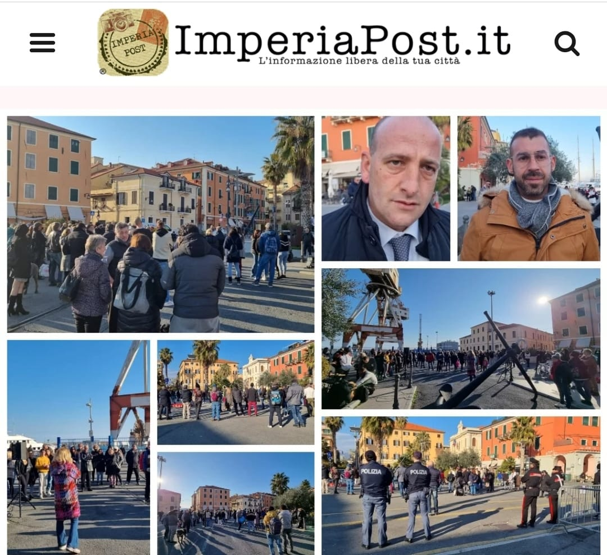
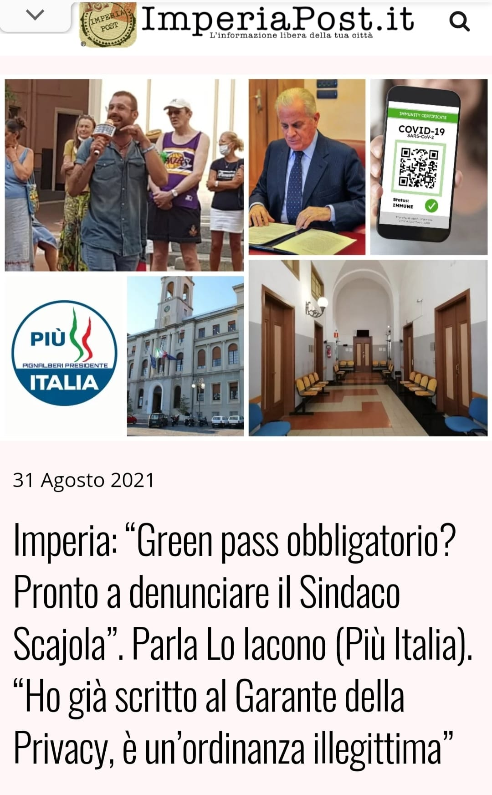
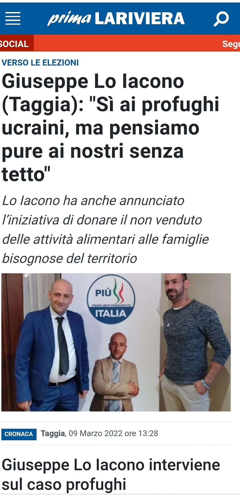
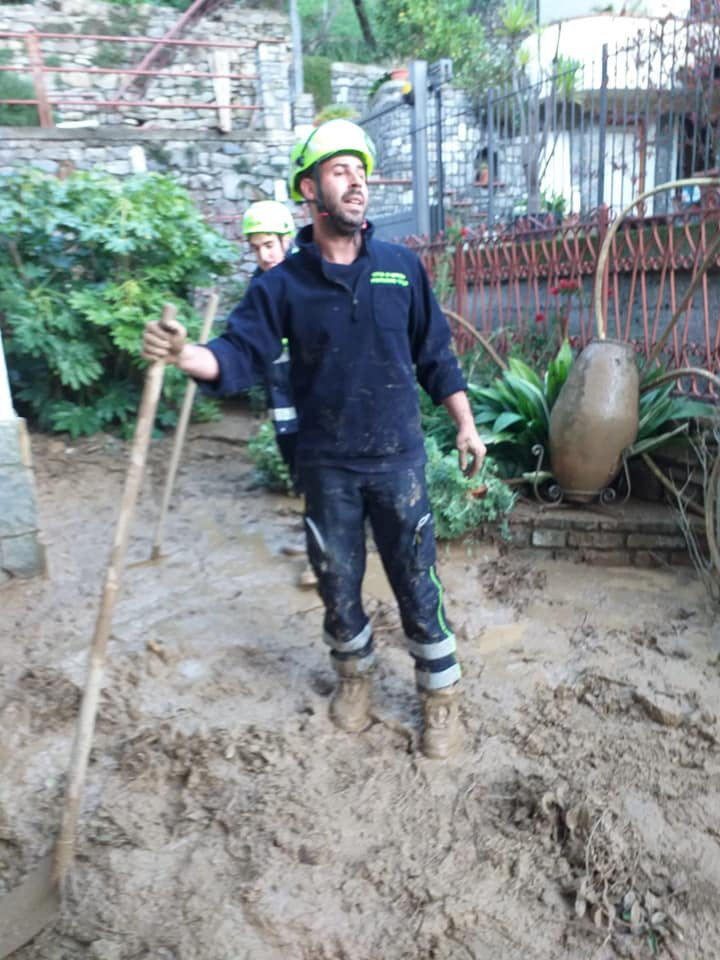
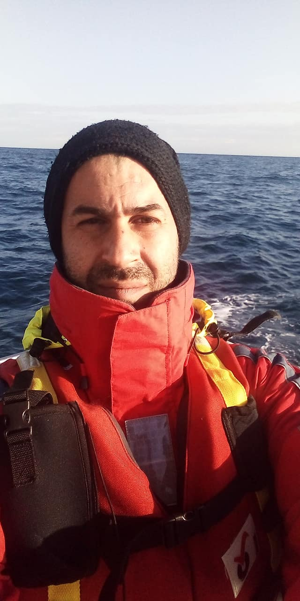
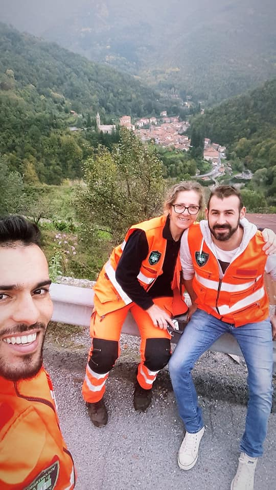
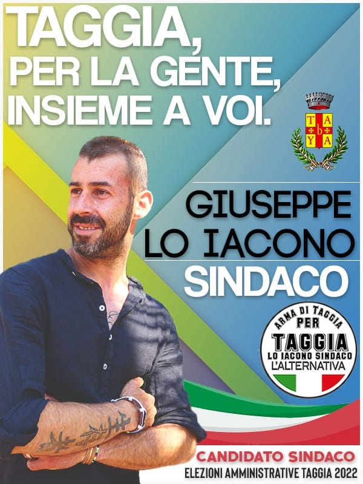
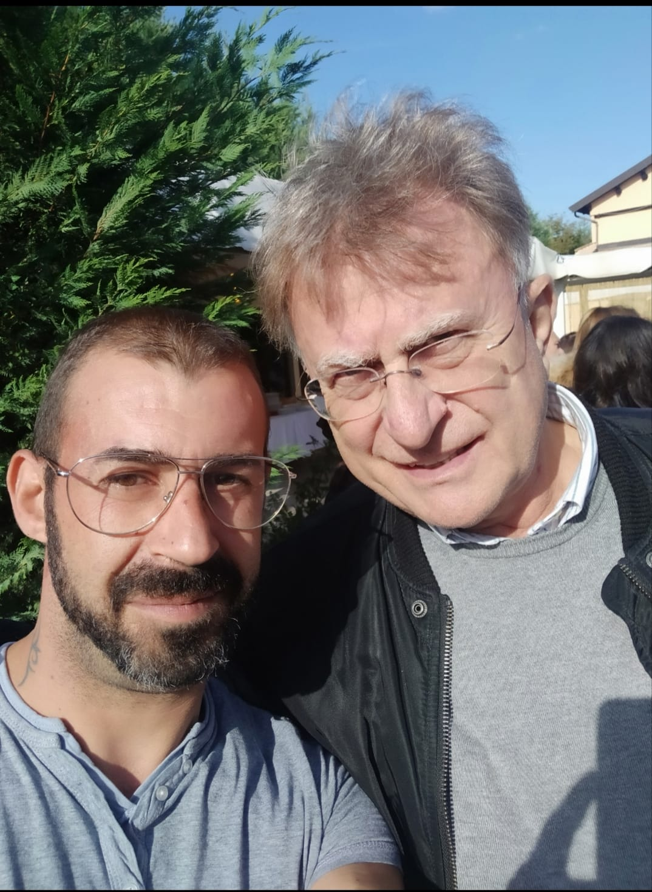

Rassegna stampa
Articoli e presenza sui media locali
Alcune iniziative civiche e interventi pubblici sono stati ripresi da testate locali, contribuendo a documentare un percorso di partecipazione e confronto.
Un percorso fatto di impegno civico, volontariato, attività pubbliche, protezione civile, soccorso e presenza sul territorio.
Nel corso degli anni alcune attività, iniziative pubbliche e prese di posizione civiche sono state raccontate da testate locali e realtà del territorio.
Questa pagina raccoglie immagini, momenti e tracce di un percorso che attraversa volontariato, protezione civile, soccorso in mare, attività civica e confronto pubblico.
Non è una vetrina personale, ma una testimonianza del legame tra esperienza vissuta e temi che oggi attraversano i miei libri: società, libertà, responsabilità, fragilità umane e rapporto tra individuo e sistema.
Per gran parte della mia vita ho operato a contatto diretto con persone, istituzioni e realtà che raramente trovano spazio nei racconti ufficiali.
Ho svolto attività di volontariato nelle pubbliche assistenze, partecipato a iniziative di protezione civile, attività antincendio, soccorso in mare e interventi a supporto della popolazione.
Nel corso degli anni ho incontrato persone senza dimora, famiglie in difficoltà economica, anziani soli, situazioni di emergenza sanitaria e fragilità sociali spesso invisibili.
Ho conosciuto il funzionamento delle istituzioni anche dall'interno, vivendo esperienze civiche e pubbliche che mi hanno permesso di osservare da vicino il rapporto tra cittadini, amministrazioni e territorio.
Molte delle riflessioni presenti nei miei libri nascono proprio da queste esperienze: dall'incontro con persone reali, problemi concreti e domande che non hanno mai smesso di accompagnarmi.

Alcune iniziative civiche e interventi pubblici sono stati ripresi da testate locali, contribuendo a documentare un percorso di partecipazione e confronto.

Esperienze pubbliche e prese di posizione maturate nel rapporto diretto con cittadini, amministrazioni e istituzioni del territorio.

Attività e proposte legate al tema delle persone in difficoltà, delle famiglie fragili e delle realtà sociali spesso meno visibili.

Oltre venticinque anni a contatto con emergenze, persone, ospedali, fragilità quotidiane e situazioni che lasciano un segno profondo.

Esperienze in contesti operativi, tra emergenze, supporto alla popolazione e attività di protezione civile.

Attività legate al soccorso e alla sicurezza, dove preparazione, attenzione e responsabilità diventano elementi essenziali.

Un percorso che ha incluso anche esperienze politiche locali e momenti di confronto diretto con cittadini e comunità.

Incontri e momenti pubblici che raccontano un percorso umano prima ancora che istituzionale.
“Molte delle domande presenti nei miei libri nascono da ciò che ho visto, ascoltato e vissuto sul campo.”